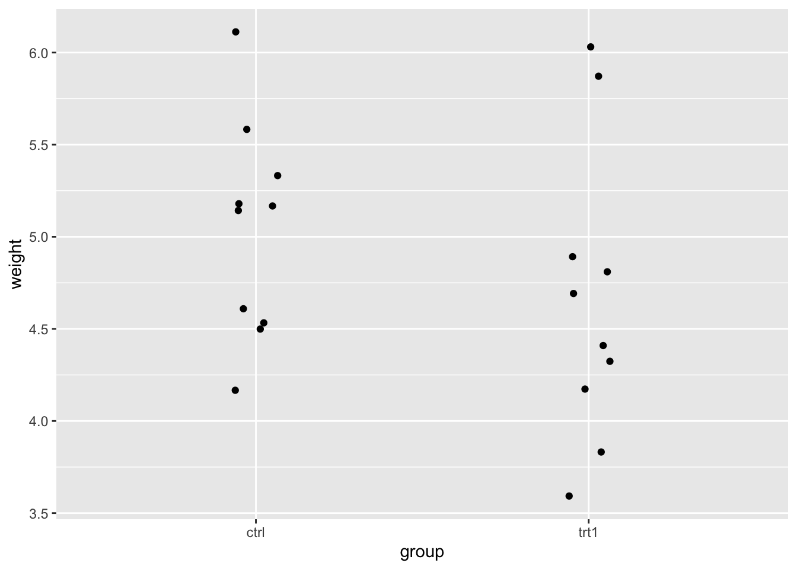
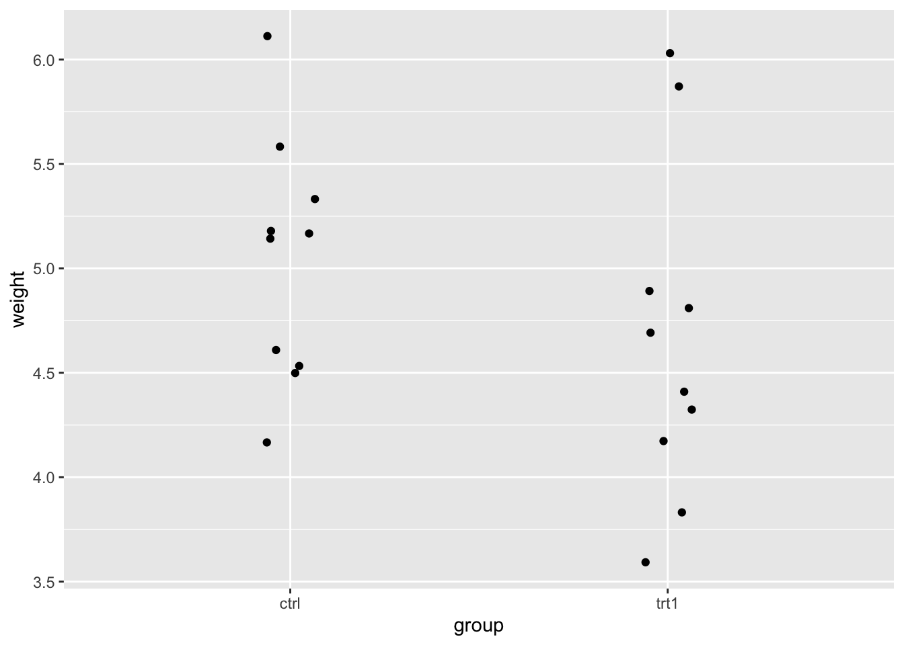
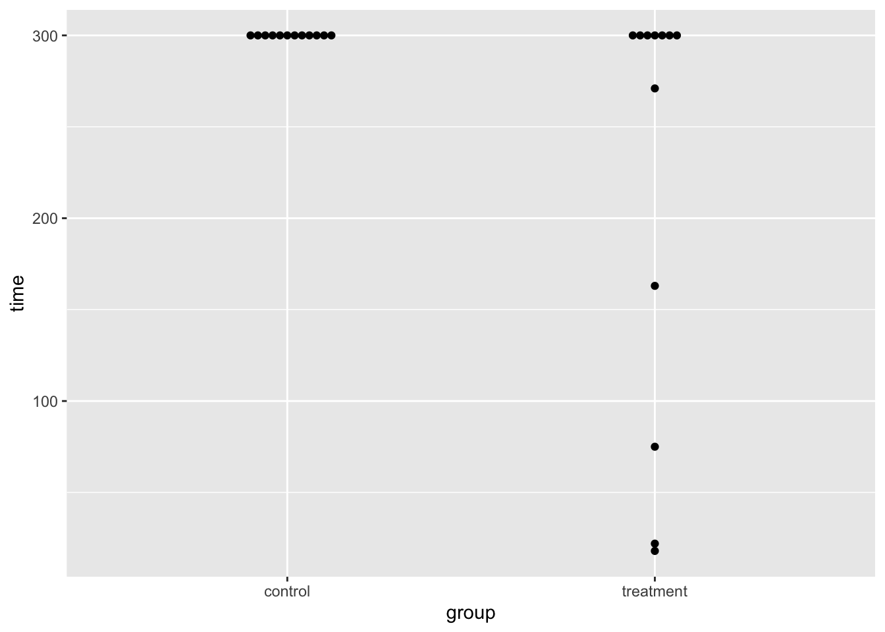

library(tidyverse)
myplants <- PlantGrowth %>% filter(group %in% c("ctrl", "trt1"))
myplants %>%
ggplot(aes(x=group, y = weight))+
geom_jitter(width=0.07)
The Wilcoxon, or Mann-Whitney U test, is a non-parametric independence test that is used to compare two groups.
We can apply it on data that consists of two groups, \(X\) and \(Y\), for example a “control” and a “treatment” group, where in both we measure the same biological indicator of some effect.
In the example below, you see data from an experiment where the effect of different conditions on plant growth was investigated.
library(tidyverse)
myplants <- PlantGrowth %>% filter(group %in% c("ctrl", "trt1"))
myplants %>%
ggplot(aes(x=group, y = weight))+
geom_jitter(width=0.07)
Here, the groups \(X\) and \(Y\) correspond to “ctrl” and “trt”, and we want to find out whether the weight is different between them. In an example like this, we would typically use a t-test, which calculates the mean and variance of both groups and checks for a difference in means. This comparison of means assumes that the data are somewhat well described by the two group means, meaning that in each group, the data points are roughly centered around their mean, and have no huge outliers. The t-test is a parametric test, because it makes assumptions about the distribution of the data (such as outlined above) and estimates parameters, namely mean and standard deviation, which describe a normal distribution.
Below, you see another example, where the t-test is not advised. In the coin::rotarod data set, rats were assigned to two different treatment groups, and of each rat the time it managed to blanace on a rotating cylinder (without falling off) was measured.
Lade nötiges Paket: survivallibrary(ggbeeswarm)
rotarod %>%
ggplot(aes(x=group, y = time))+
geom_beeswarm()
The experiment stopped at 300 s. As you see in the data above, all of the rats in the control group made it to the end without falling, whereas in the treatment group, 5 rats dropped out earlier. This data is not well described by group means and standard deviation, for several reasons:
For this data, a Wilcoxon test is a better choice, because it is non-parametric, i.e. it does not try to fit a distribution to the data. Instead, it transforms the data into ranks, as we will see below.
Even though no specific distribution is assumed when applying the Wilcoxon test, some assumptions are still made (see Wikipedia:
If you don’t know what “independence” means in the statistics context, have a look here.
To approach the difference between groups without calculating for example a mean, the null hypothesis is described as follows.
\[H_0: P(X > Y) = P(Y > X)\]
In words: If taking any to measurements \(x_i\) and \(x_j\) from \(X\) and \(Y\), the chance of \(x_i\) being greater than \(y_i\) is the same as vice versa.
The alternative hypothesis is that this probability is not the same: \[H_A: P(X > Y) = P(Y > X)\]
An intuitive interpretation is therefore that the test detects differences in median.
If we are investigating the probability of \(Y>X\), the exact numbers of the data points in \(X\) and \(Y\) do not matter. For example, if \(x_i = 2\) and \(y_j=2.2\), then \(x_i<y_j\). But if \(y_j = 200\) instead, then we still have \(x_i<y_j\). It’s only about the order of the data points.
The order of data points can be encoded as ranks. For the Wilcoxon test, we rank all the data (ignoring the groups). This means we give rank 1 to the lowest value, rank 2 to the second lowest, and so on. Let’s look at the ranks for a subset of the plants data.
We create a subset:
plants_subset <- myplants[c(1:5,11:15),]
plants_subset weight group
1 4.17 ctrl
2 5.58 ctrl
3 5.18 ctrl
4 6.11 ctrl
5 4.50 ctrl
11 4.81 trt1
12 4.17 trt1
13 4.41 trt1
14 3.59 trt1
15 5.87 trt1Now we assign ranks:
weight group rank
1 3.59 trt1 1.0
2 4.17 ctrl 2.5
3 4.17 trt1 2.5
4 4.41 trt1 4.0
5 4.50 ctrl 5.0
6 4.81 trt1 6.0
7 5.18 ctrl 7.0
8 5.58 ctrl 8.0
9 5.87 trt1 9.0
10 6.11 ctrl 10.0You can see that the rank columns contains the values from 1 to 10 - or almost. The values 2 and 3 are missing, because there is a tie: The measurement \(4.17\) (the second lowest) appears twice. Therefore, both measurements get rank \(2.5\).
A test statistic is a value that gets extreme (extremely large or extremely small) in case there is a difference between the two group - or, in other words: in case there is evidence for a deviation from the null hypothesis.
A simple approach to compare the two groups is to sum up the ranks within each group and compare them. We can do this for our example:
# A tibble: 2 × 2
group rank_sum
<fct> <dbl>
1 ctrl 32.5
2 trt1 22.5This tells us that the control group has a lower rank sum, i.e. on average the ranks in the control group are smaller. The next thing we need to find out is how unlikely it is to see a difference in rank sums like this by chance, if in reality \(X\) and \(Y\) come from the same distribution.
Intuitively, we can compare the observed rank sums to what we expect in a few extreme cases. For example:
ctrl and \(R_y = 6+7+8+9+10 = 40\) for trt1. (And vice versa.)Our example seems to be somewhat in the middle.
In the test, we use the Mann-Whitney U statistic, of which we know the distribution (behavior) under the null hypothesis. It is defined as
\[U = min(U_x, U_y)\] with
\[U_x = n_xn_y + \frac{n_x(n_x + 1)}{2} - R_x \] and \[U_y = n_xn_y + \frac{n_y(n_y + 1)}{2} - R_y \].
Let’s dissect this.
\(R_x\) and \(R_y\) are the rank sums that we already calculated for our example. In the \(U_x\), the rank sum \(R_x\) gets subtracted from the term \[n_xn_y + \frac{n_x(n_x + 1)}{2}\] This is the rank sum that we’d expect in case \(X\) had all the upper ranks. That expected rank sum depends on \(n_x\) and \(n_y\), the number of data points in \(X\) and \(Y\), respectively. We calculated it by hand for the example above, and this calculation can be abstracted to the term you see here.
Since \[U_x = \text{expectation if X has all the upper ranks} - R_x\], \(U_x\) will be
The same logic applies for \(U_y\). By taking the minimum of \(U_x\) and \(U_y\), we will have
In summary, a low \(U\) represents evidence for \(X\) and \(Y\) being different, represented as a difference in rank sums.
Per definition, the p-value is the probability of seeing data (i.e. a test statistic) at least as extreme as what as actually observed, under the assumption that the null hypothesis is true.
If the probability of our data under the null hypothesis is small (usually: \(p<0.05\)), we reject the null hypothesis and report a significant difference between the two groups.
For calculating \(p\), we need knowledge how the test statistic behaves under the null hypothesis, specifically we need to know its null distribution.
There are different ways of getting to this distribution and thus the p-value, which will lead to small differences in the resulting p-value. Two examples are:
If you use the R implementation of the wilcox.test, the documentation reads: > By default (if exact is not specified), an exact p-value is computed if the samples contain less than 50 finite values and there are no ties. Otherwise, a normal approximation is used.
You are usually fine with sticking to the default. You may see slightly different results from different packages due to small differences in their defaults. Again, in most cases, these don’t impact the conclusion. If they do, it’s time to further investigate which method fits your data best.
Applying the built-in test to the example subset gives:
wilcox.test(weight ~ group, data = plants_subset)Warning in wilcox.test.default(x = DATA[[1L]], y = DATA[[2L]], ...): kann bei
Bindungen keinen exakten p-Wert Berechnen
Wilcoxon rank sum test with continuity correction
data: weight by group
W = 17.5, p-value = 0.3457
alternative hypothesis: true location shift is not equal to 0Advanced: There is another implementation of the Wilcoxon test in the coin package, which allows more flexibility in calculating the test statistic and null distribution, and allows stratifying the test among blocking factors. Example for usage:
coin::wilcox_test(weight ~ group, data = plants_subset, distribution="approximate")
Approximative Wilcoxon-Mann-Whitney Test
data: weight by group (ctrl, trt1)
Z = 1.0476, p-value = 0.3365
alternative hypothesis: true mu is not equal to 0We can also run the test for the whole plantGrowth and rotarod data sets:
wilcox.test(time ~ group, rotarod)Warning in wilcox.test.default(x = DATA[[1L]], y = DATA[[2L]], ...): kann bei
Bindungen keinen exakten p-Wert Berechnen
Wilcoxon rank sum test with continuity correction
data: time by group
W = 102, p-value = 0.01647
alternative hypothesis: true location shift is not equal to 0wilcox.test(weight ~ group, myplants)Warning in wilcox.test.default(x = DATA[[1L]], y = DATA[[2L]], ...): kann bei
Bindungen keinen exakten p-Wert Berechnen
Wilcoxon rank sum test with continuity correction
data: weight by group
W = 67.5, p-value = 0.1986
alternative hypothesis: true location shift is not equal to 0For the same data sets the t-test will give the following results:
t.test(weight ~ group, myplants)
Welch Two Sample t-test
data: weight by group
t = 1.1913, df = 16.524, p-value = 0.2504
alternative hypothesis: true difference in means between group ctrl and group trt1 is not equal to 0
95 percent confidence interval:
-0.2875162 1.0295162
sample estimates:
mean in group ctrl mean in group trt1
5.032 4.661 The t-test gives a comparable result for the plantGrowth data set, coming to the same conclusion that the difference in weights is not significant between ctrl and trt1. In most casese where the t-test can be used, it’s also OK to use the Wilcoxon test. One caveat is that in the Wilcoxon test, we drop all the information on the actual values of the data points. This, in combination with making less assumptions on the data, can sometimes make it harder to detect a significant deviation of the data from the our null assumption. This is especially relevant for small data sets. We say that the t-test has a higher power than the Wilcoxon test, meaning that if there is a difference between the groups, the t-test is often better in detecting it.
The limitations of the rank-based test become clear when we look at very small data sets. Consider two groups with only 3 data points each. There are only 20 ways to distribute 6 ranks among 2 groups.
choose(6,3)[1] 20A two-sided p-value will therefore never be below \(\frac{1}{20}\cdot 2\). To demonstrate:
x <- 1:3 # x has all the lower ranks
y <- 4:6 # y has all the upper ranks
wilcox.test(x,y)
Wilcoxon rank sum exact test
data: x and y
W = 0, p-value = 0.1
alternative hypothesis: true location shift is not equal to 0The Wilcoxon test is usually used when the data are not normally distributed, so a t-test doesn’t apply. However, there are also other approaches that might apply: